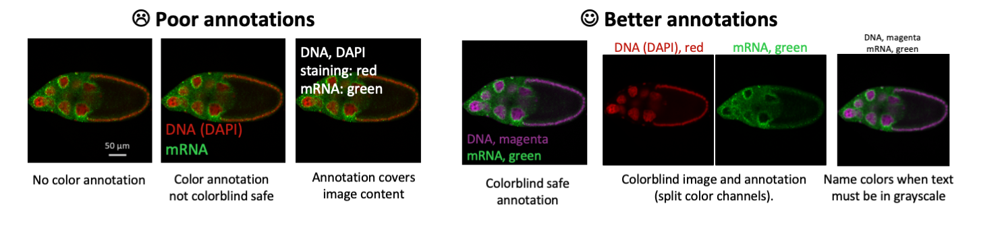

How to… image annotation
I already wrote why we need to annotate more, how to choose your image format, and how to annotate physical scales. But we also have to annotate symbols, regions, stainings and fluorphores (for general colors wait for next post.

Color annotations
Image colors are usually annotated in the color they are shown, this is fast and easy for readers. Problems may arise when image colors are not color-bind save, when the image has yellow stainigs that do not work for text. Alternatively, the color name is written out and linked to the molecule (GFP = green, actin-Cy3 = red etc). In this case the readers has to do a semantic translation of color name to image color, which is slow and error-prone as we all see colors differently.
Whenever you have >2-3 colors, you can safely assume that not all will be able to distinguish them any more. Not everyone is familiar with “lavender” or “salmon”, as we know since the hilarious and VERY exhaustive survey by XKCD.

Visibility of Annotations
Just like your image colors, also your annotations should be color-blind save. But some color combinations are also hard to decipher with regular vision.
Symbols, arrows, ROIs
Oftentimes lines, arrows, symbols and regions of interest (ROIs) are used to point out important details or areas in an image. It is essential that all annotations are distinguishable and clearly explained. Avoid using the same symbol for several meanings: if arrows are used to point out structures, they should not concurrently be used to also indicate motion.

Annotate your heart out..
Whatever you may feel important for your readers you should make an effort to help them take it in fast. Below are examples that annotate the position of laser manipulation with dashed-line ROI, color-code the z-stack depth, progressive zoom, and the overlap colors (good to be reminded in RGB space that mixing red, blue and green is WHITE).
Many annotations
If you went a bit overboard with your annotations, you may have to find creative solutions. Here are two examples:
Consistent code from image to quantification

Annotate where?
Ideally the explanation is in the figure itself, as close to the data as possible. Alternatively, explanations can go to the figure legend. Remember however that at times the legend is not even on the same page as the figure, that legends may have word limits, and that a legends in which many annotations have to be explained become tedious to read.
Speaking of.. Figure legends
Figure legends are essential for complete image annotation. They should inform about the specimen, maybe preparation, dyes and all essentials for understanding the image. Which information is in the figure versus the figure legend (and method section) depends on journal requirements and personal preference, but in sum the information should make the figure self-explanatory. A critical analysis by Yu of figure legends showed that up to 70% of the information needed to comprehend the figure was lacking, many times readers needed a complete paper to fully comprehend figures.
Read more
Are figure legends sufficient? Evaluating the contribution of associated text to biomedical figure comprehension. Yu, H., Agarwal, S., Johnston, M., Cohen, A., 2009. J Biomed Discov Collab